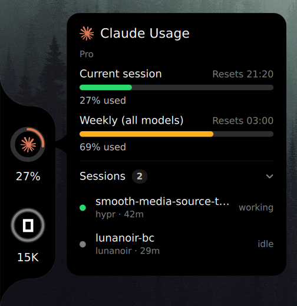

Your AI limits, on the edge of the screen
flare is a notch for Quickshell on Hyprland. It shows how much of your Claude Code, Codex, Cursor, OpenCode, Antigravity and Kiro allowance is left, and which Claude sessions are running right now.
The notch on this page's left edge works. Hover a ring.
Install
$ git clone https://github.com/lunanoir21/quickshell-flare$ cd quickshell-flare$ ./install.sh
The script builds the flare binary if Rust 1.85 or newer is installed, and otherwise downloads the latest release build. It puts it in ~/.local/bin and runs flare doctor, which lists what flare can and cannot find on your machine.
Run the widget on its own with quickshell -p ui, or add it to the shell you already have:
import "path/to/quickshell-flare/ui" as Flare
ShellRoot {
Flare.FlareHost {}
}- Quickshell 0.3+
- and Qt 6.6 or newer.
- Hyprland
- flare is built and tested there. Jumping to a session's terminal uses
hyprctl. - x86_64, glibc 2.39+
- only for the prebuilt binary (Arch, Fedora 40+, Ubuntu 24.04+). Building from source has no such limit.
Three looks
Picking one here changes the notch on this page.
Each look meets the screen edge one of three ways: bridge welds it on with inverse rounded corners, floating holds it off the edge as a panel, and flush runs a strip along the whole edge.
It can stay out of the way, too. With notch.reveal = "hover" it waits past the edge and slides in when the pointer gets there; with "shortcut", a key brings it in and sends it away.
Open sessions
Under the limits, the card lists the Claude Code sessions running right now: each one's name, project and age, and whether it is working, waiting on you or idle.
Click a row and the session's terminal comes to the front. The list is read from the records Claude Code keeps for itself; a session whose process has exited, or whose terminal no longer has a window, is left out, so what you see is what you can switch to.

What each one shows
Six tools, each read the way it keeps its own numbers: a rate limit as a ring, a pay-as-you-go tool as today's tokens, a credit plan as the credits it has left this month.
- read directly
- from flare’s own readings
- not available
| provider | limit ring | reset time | usage today | local mode | sessions | heatmap |
|---|---|---|---|---|---|---|
| Claude Codelimits · tokens | Read directly5h, weekly | Read directly | Read directlytokens | Read directlystatus line | Read directlyjump to it | Read directlyfrom logs |
| Codexlimits | Read directlyprimary, weekly | Read directly | Not available | Read directlyrollout log | Not available | From flare’s own readings |
| Cursorincluded usage | Read directlyasks first | Read directly | Not available | Not available | Not available | From flare’s own readings |
| OpenCodetokens | Not availableown API keys | Not available | Read directlytokens | Read directly | Read directlyhistory | Read directlyfrom db |
| Antigravityquotas · tokens | Read directlyper model | Read directly | Read directlytokens | Read directly | Read directlyhistory | Read directlyfrom db |
| Kirocredits | Read directlymonthly | Read directly | Read directlycredits | Read directlycredits | Read directlyhistory | Read directlycredits |
Where the numbers come from
official
The default. Each provider's own usage endpoint, asked with the sign-in its CLI already keeps, the way Codenotch does it. Network reads keep their own pace: Claude once a minute, Codex, Cursor and Kiro every five.
local
Never opens a network connection. Reads only what each tool already wrote to disk, so a provider that keeps nothing there shows nothing.
| Provider | official | local |
|---|---|---|
| Claude Code | Its usage endpoint, with the token in ~/.claude/.credentials.json | A status line capture |
| Codex | Its usage endpoint, with the session in ~/.codex/auth.json | Its newest rollout log |
| Cursor | Its usage endpoint, with the editor's own session, after asking you once | Nothing on disk to read |
| OpenCode | Its local database. It runs on your own API keys, so it shows tokens today, not a limit. | |
| Antigravity | Each model group's quota, from agy's status line through the bundled capture hook; tokens and models from the conversation databases in ~/.gemini/antigravity-cli. | |
| Kiro | Its usage-limits endpoint, with the sign-in kiro-cli keeps; the month's credits and when they refill | The credits each request used, from ~/.kiro/sessions/cli |
Credentials are read, never written and never printed. A reading that could not be refreshed is dimmed, not guessed.
Keys
| Call | Does |
|---|---|
card claude | Opens a provider's card without the pointer; call it again to close |
toggleSessions | Opens or folds the session list |
toggleVisible | Brings the notch in or tucks it away |
next, prev | Steps aura to the next or previous provider |
toggle | Opens or closes the compact panel |
settings | Opens the settings page |
refresh | Reads now |
In hyprland.conf:
bind = SUPER, U, exec, qs ipc call flare card claudebind = SUPER SHIFT, U, exec, qs ipc call flare toggleVisible
Settings
Right-click the notch for its settings page, or change a key from a terminal. Both write the same file, and the widget picks up a change within a second.
$ flare config set notch.style aura$ flare config set notch.edge right$ flare config set data.mode local$ flare config set ui.language tr
Every key is listed in the README.